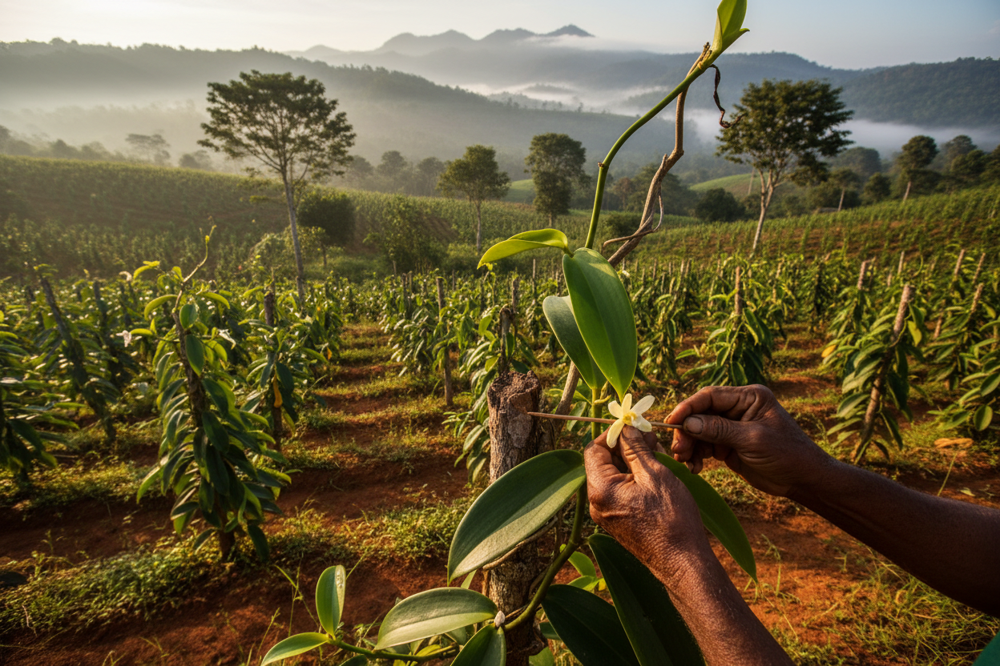

L'agriculture
la production de vanille à Madagascar,
Madagascar est célèbre pour sa vanille Bourbon,une variété prisée pour sa richesse aromatique
et sa qualité exeptionnelle.
Secteur traditionnellement dominant mais à faible productivitè
Madagascar est le premier producteur de vanille avec d'autres produits agricoles important comme le café le épices
La production reste cependant